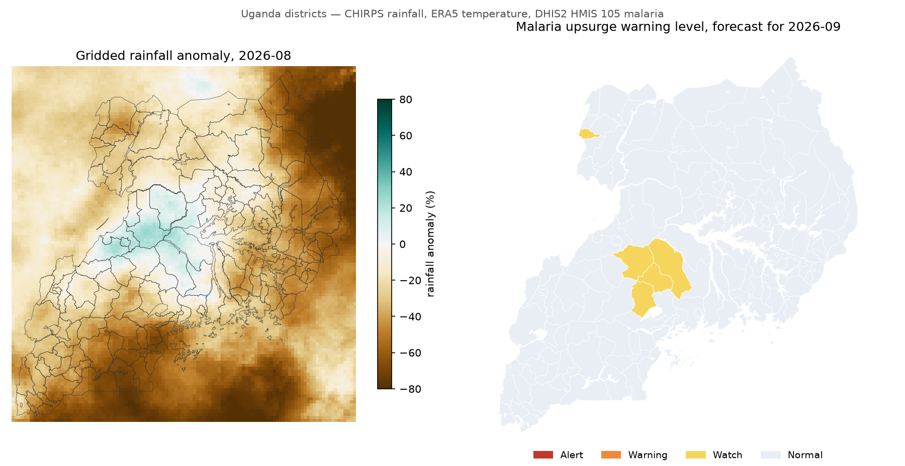
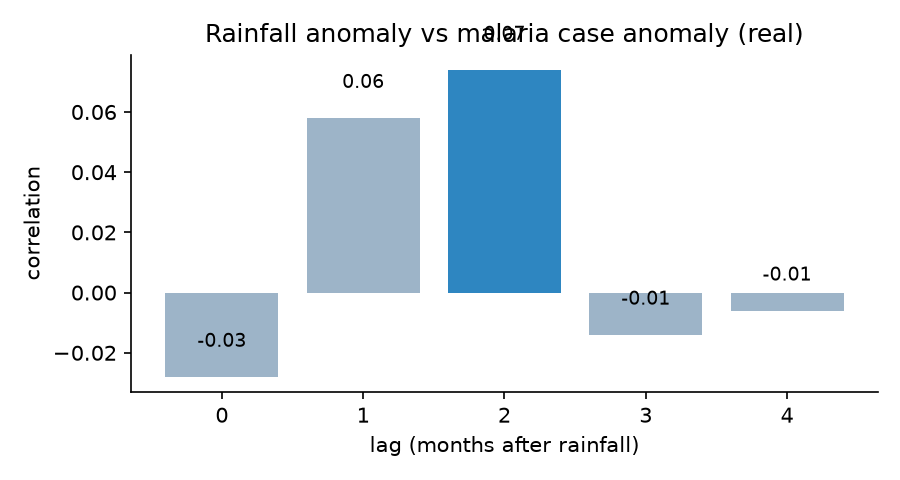
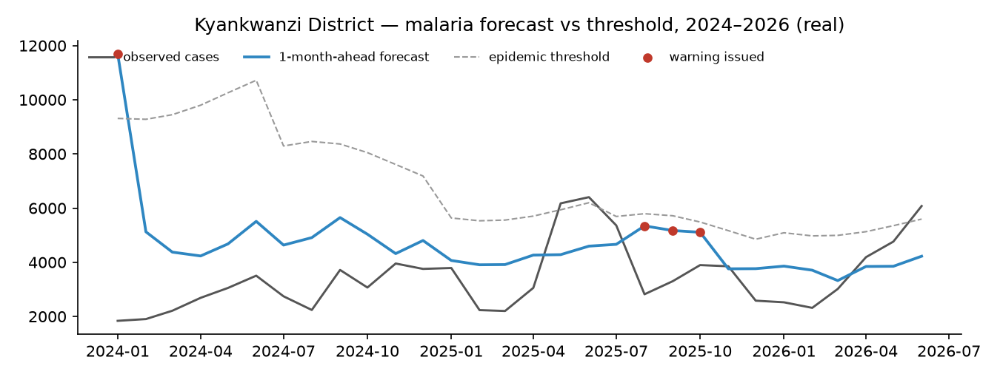

No district is at Warning or Alert level for September 2026.
Data: confirmed malaria from DHIS2 (HMIS 105, 105-EP01c), UBOS 2024 census population, CHIRPS v2.0 rainfall and NASA POWER (MERRA-2) or ERA5 temperature. Forecasts support, but do not replace, the judgement of district health teams; CAP alerts stay marked Exercise until the designated authority approves them.
A district's level is the forecast chance that next month's confirmed cases go above its epidemic threshold (its expected level for the month, adjusted for the long-term trend, raised by the usual size of past upsurges (mean plus 2 standard deviations)).
Left: last month's rainfall compared with normal. Right: warning level for September 2026.

Every district above Normal, highest chance first. Alert and Warning districts each have a CAP alert.
| District | Region | Level | Chance above threshold | Forecast cases | Threshold | Rain last month (mm) | Action |
|---|---|---|---|---|---|---|---|
| Kyankwanzi District | North Central | Watch | 5,163 | 6,497 | 134 | Monitor | |
| Arua City | West Nile | Watch | 6,204 | 8,029 | 108 | Monitor | |
| Kassanda District | North Central | Watch | 4,987 | 6,481 | 77 | Monitor | |
| Nakaseke District | North Central | Watch | 4,636 | 6,045 | 134 | Monitor | |
| Kiboga District | North Central | Watch | 4,475 | 6,118 | 111 | Monitor |
Execute: check ACT and RDT stocks, intensify case management and vector control, report weekly. Prepare: pre-position stock and alert health facilities. Monitor: follow weekly mTrac/eIDSR reports.
The model was trained on 2020–2023 and tested on Jan 2024–Jun 2026, data it had not seen (refitted every 6 months on the data available at the time, as it would be run), against a model that only knows the seasonal pattern. Malaria cases have been changing by about -5% a year, so the model follows that trend and each district's threshold is set relative to its expected level today, not to past levels. The model marked ✓ produces the forecast above.
A Warning or Alert counts as a hit when cases went above the threshold the next month
| Model | Epidemic months | Warned | Missed |
|---|---|---|---|
| seasonal only, no trend | 42 | 0 | 42 |
| climate + trend (previous model) | 42 | 1 | 41 |
| + recent cases | 42 | 1 | 41 |
| final without climate | 42 | 0 | 42 |
| + calibrated cut-offs (final) | 42 | 1 | 41 |
For the final model on the test months: if a warning were issued whenever the chance is at least the cut-off. A lower cut-off catches more upsurges but gives more false alarms.
| Cut-off | Warnings | Upsurges caught | False alarms |
|---|---|---|---|
| 10% | 605 | 50% | 97% |
| 20% | 148 | 19% | 95% |
| 30% | 36 | 5% | 94% |
| 40% | 12 | 0% | 100% |
| 50% | 4 | 0% | 100% |
| 60% | 1 | 0% | 100% |
| 70% | 0 | 0% | 0% |
| 80% | 0 | 0% | 0% |
| 90% | 0 | 0% | 0% |
Correlation between rainfall and case anomalies at each lag. In the model, 50 mm more rain raises next month's cases by about 5% and cases two months later by about 6%.

The district with the most epidemic months in Jan 2024–Jun 2026. Red dots mark months a warning was issued.

| Level | Above (+) or below threshold |
|---|